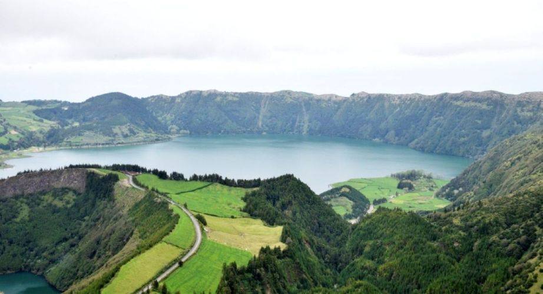

AZORES
Descubre las Azores: el secreto mejor guardado del Atlántico
Entre Europa y América se esconden las Islas Azores, un paraíso natural de origen volcánico donde el tiempo parece detenerse. Imagina lagos de cráter color esmeralda, acantilados cubiertos de hortensias y aguas termales bajo el cielo estrellado. Perfectas para los amantes del senderismo, el buceo o simplemente para quienes buscan desconectar, las Azores ofrecen una mezcla única de aventura, tranquilidad y autenticidad.
| Comida típica | Cozido das Furnas, Lapas, Ananas |
| Alojamientos recomendados | Azores Paim Apartament en Punta Delgada Atlantic 3 Bicas en Furnes Casa do Pateo en Punta Delgada |

Mejores lugares para visitar en Azores:
- Lagoa das Sete Cidades
- Caldeira Velha
- Lagoa do Fogo
- Furnas
- Jardim Terra Nostra